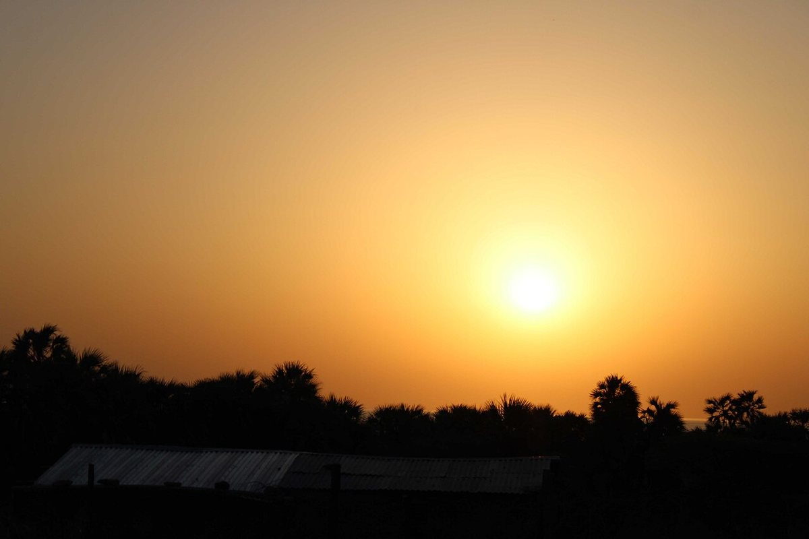

Harmand et al. · Lomekwi 3 tools (Nature, 2015) ↗
The excavation paper maps the locality and illustrates the stratigraphy and tools.
Deep dives / Africa & Middle East
On the western side of Kenya’s Turkana Basin, Lomekwi 3 preserves a stone assemblage substantially older than the earliest fossil currently assigned to Homo. The find widened the search for the earliest stoneworkers to other hominin lineages.
The map shows the Lomekwi 3 locality in the west Turkana landscape.

Approximate public research locality on a modern terrain map.
About 3.3 Ma
In situ and surface stone artifacts from the Lomekwi research area. [1]
3.93°, 35.86°The assemblage includes cores and flakes alongside large stones with battering damage. The excavators reconstructed actions that involved striking a stone against a fixed surface or hitting a core supported on an anvil. They proposed Lomekwian as a name for the assemblage. [1]
The excavation team tied the artifact-bearing sediment to the Turkana Basin sequence using volcanic ash and magnetic polarity. Buried finds anchor the archaeological horizon. Loose finds nearby carry less direct evidence of their original position. [1]
The Lomekwi tools are about half a million years older than the Ledi-Geraru jaw assigned to early Homo. One possible maker is a hominin outside the genus Homo. Kenyanthropus platyops fossils occur in the same broader research area and time period, and the evidence leaves the maker unresolved. [1] [2]
Placing Lomekwi 3 in human-family chronology depends on bracketing stratified volcanic ash layers (40Ar/39Ar), cosmogenic nuclide burial ages, or paleomagnetic reversals above and below the artifact or footprint horizon rather than dating stone flakes in isolation. Reworking, fluvial transport, and cut-mark/percussion equifinality remain key variables evaluated in every new study. [1] [2]
Rather than identifying a single exclusive ancestor, this locality serves as a tightly constrained chronological anchor that must be compared side-by-side with contemporary Rift, southern, north African, and Eurasian finds inside the playable Human Family map. [1]
| Anchor Locality | Published Age Horizon | Primary Evidence Signature | Key Research Limitation | Sources |
|---|---|---|---|---|
| Lomekwi 3 | About 3.3 Ma | In situ and surface stone artifacts from the Lomekwi research area. | The map shows the Lomekwi 3 locality in the west Turkana landscape. | [1] |
Open the source maps for their original detail, legends and dates. Their coverage and reproduction terms belong to the issuing institution.
The excavation paper maps the locality and illustrates the stratigraphy and tools.
Open this era on global Explore ↗ Open Africa & Middle East atlas ↗ Climate, sea level & ice-sheet context ↗
Sources checked and linked above; geological and historical dating methods follow the primary papers.